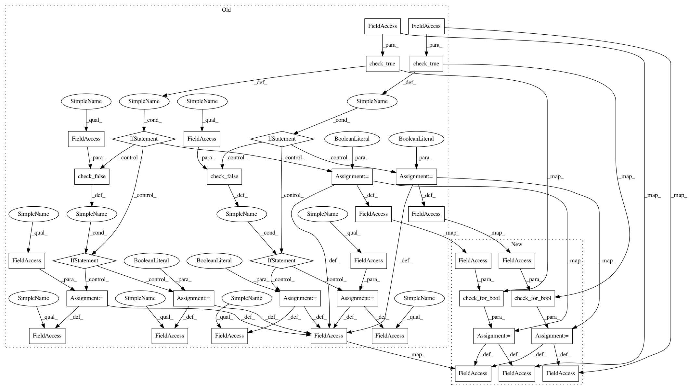

229d418b9e473948294e12310cb87a38f32a831c,autosklearn/pipeline/components/feature_preprocessing/liblinear_svc_preprocessor.py,LibLinear_Preprocessor,fit,#LibLinear_Preprocessor#Any#Any#,31
Before Change
self.C = float(self.C)
self.tol = float(self.tol)
if check_true(self.dual):
self.dual = True
elif check_false(self.dual):
self.dual = False
else:
self.dual = self.dual
if check_true(self.fit_intercept):
self.fit_intercept = True
elif check_false(self.fit_intercept):
self.fit_intercept = False
else:
self.fit_intercept = self.fit_intercept
self.intercept_scaling = float(self.intercept_scaling)
if check_none(self.class_weight):
self.class_weight = None
estimator = sklearn.svm.LinearSVC(penalty=self.penalty,
loss=self.loss,
dual=self.dual,
tol=self.tol,
C=self.C,
class_weight=self.class_weight,
fit_intercept=self.fit_intercept,
intercept_scaling=self.intercept_scaling,
multi_class=self.multi_class,
random_state=self.random_state)
estimator.fit(X, Y)
self.preprocessor = SelectFromModel(estimator=estimator,
threshold="mean",
prefit=True)
After Change
self.C = float(self.C)
self.tol = float(self.tol)
self.dual = check_for_bool(self.dual)
self.fit_intercept = check_for_bool(self.fit_intercept)
self.intercept_scaling = float(self.intercept_scaling)
if check_none(self.class_weight):
self.class_weight = None
estimator = sklearn.svm.LinearSVC(penalty=self.penalty,
loss=self.loss,
dual=self.dual,
tol=self.tol,
C=self.C,
class_weight=self.class_weight,
fit_intercept=self.fit_intercept,
intercept_scaling=self.intercept_scaling,
multi_class=self.multi_class,
random_state=self.random_state)
estimator.fit(X, Y)
self.preprocessor = SelectFromModel(estimator=estimator,
threshold="mean",
prefit=True)
In pattern: SUPERPATTERN
Frequency: 3
Non-data size: 36
Instances
Project Name: automl/auto-sklearn
Commit Name: 229d418b9e473948294e12310cb87a38f32a831c
Time: 2018-01-12
Author: eggenspk@informatik.uni-freiburg.de
File Name: autosklearn/pipeline/components/feature_preprocessing/liblinear_svc_preprocessor.py
Class Name: LibLinear_Preprocessor
Method Name: fit
Project Name: automl/auto-sklearn
Commit Name: 229d418b9e473948294e12310cb87a38f32a831c
Time: 2018-01-12
Author: eggenspk@informatik.uni-freiburg.de
File Name: autosklearn/pipeline/components/feature_preprocessing/liblinear_svc_preprocessor.py
Class Name: LibLinear_Preprocessor
Method Name: fit
Project Name: automl/auto-sklearn
Commit Name: 229d418b9e473948294e12310cb87a38f32a831c
Time: 2018-01-12
Author: eggenspk@informatik.uni-freiburg.de
File Name: autosklearn/pipeline/components/classification/liblinear_svc.py
Class Name: LibLinear_SVC
Method Name: fit
Project Name: automl/auto-sklearn
Commit Name: 229d418b9e473948294e12310cb87a38f32a831c
Time: 2018-01-12
Author: eggenspk@informatik.uni-freiburg.de
File Name: autosklearn/pipeline/components/classification/sgd.py
Class Name: SGD
Method Name: iterative_fit